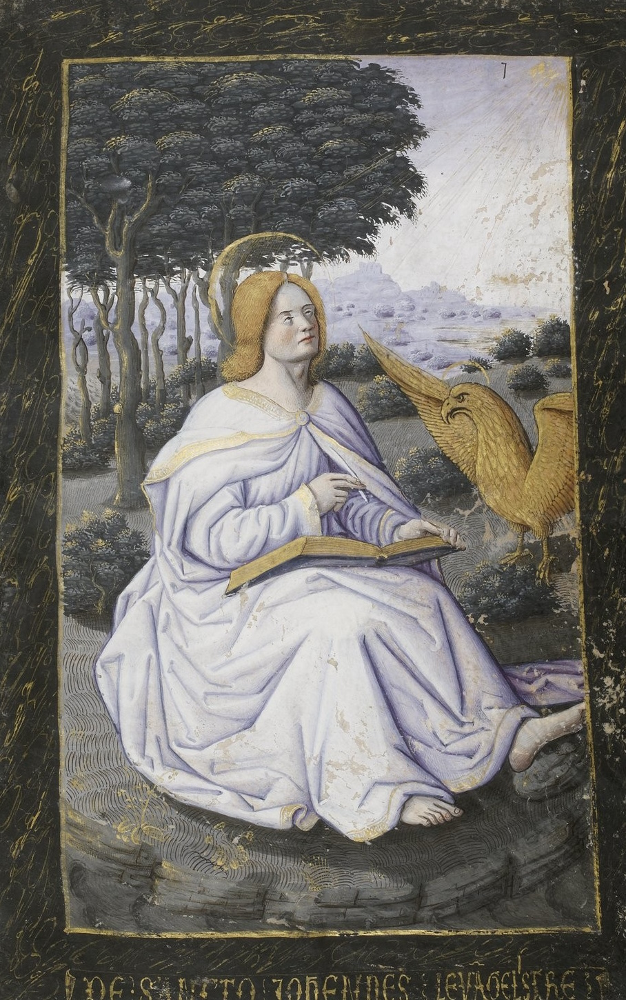

— 卡美洛古籍图书馆 —
卡美洛 古籍图书馆
彩绘手抄本 · 摹本珍藏 · 学术数据库
MINERVA · SAPIENTIA
— 智慧之源 · 哲学典籍 —
点击石碑，聆听哲语箴言
密涅瓦（Minerva）是罗马神话中的智慧女神，掌管哲学、艺术、诗歌与手工艺。她的智慧象征着人类对真理的不懈追求，以及对存在本质的沉思。
在古典传统中，哲学被视作“爱智慧”（Φιλοσοφία），它引导我们超越表象，探寻宇宙与人生的根本意义。从古希腊的柏拉图和亚里士多德，到罗马的塞涅卡与西塞罗，哲人们以理性的光芒照亮人类前行的道路。

⚜
亨利二世时祷书
Hours of Henry II
时祷书
进入 →

⚜
萨伏伊时祷书
Hours of Savoy
时祷书
进入 →

⚜
亨利四世时祷书
Hours of Henry IV
时祷书
进入 →

⚜
Codex Sinaiticus
St. Petersburg · Leipzig · London · Sinai
圣经
进入 →

⚜
Roman Virgil
Vatican, MS Vat. lat. 3867
诗歌
进入 →

⚜
Codex Amiatinus
Florence, MS Amiatino 1
圣经
进入 →

⚜
Ashburnham Pentateuch
Paris, MS nouv. acq. lat. 2334
律法书
进入 →

⚜
Codex Augusteus
Berlin · Vatican
诗歌
进入 →

⚜
Leonine Sacramentary
Verona, MS LXXXV
礼仪
进入 →

⚜
Rossano Gospels
Rossano Calabro, Museo dell'Arcivescovado
福音书
进入 →

⚜
Vatican Virgil
Vatican, MS Vat. lat. 3225
诗歌
进入 →